A marketer may need an audience definition, product capability, approved claim, proof, channel rule and campaign learning to create one email. Those pieces often sit in different systems. A knowledge graph makes their relationships explicit so a person or AI workflow can find a suitable path through them, then check whether the path is current and approved.
The example below is illustrative. It describes a possible model, not a deployed graph or real campaign result.
View the visual knowledge graph ↓
Start with the marketing decision
Imagine a campaign manager preparing an evaluation-stage email for teams that coordinate campaign reviews. The objective is to encourage a product demo. The proposed product capability is an approval workflow. The marketer needs to know which benefit to lead with, which claim is approved, what evidence supports it, and whether email is an appropriate channel.
The graph stores those items as entities. The relationships say why one item may be used with another. A document search might return a campaign deck that contains the right words; the graph can also show that a claim applies to this capability, has current proof, and is permitted for this audience and market.
The marketing knowledge graph

A small but useful schema
| Node | Example properties | Why they matter |
|---|---|---|
| Audience | Segment, market, owner | Limits applicability |
| Capability | Product ID, version, availability | Keeps product context current |
| Claim | Text, approval, market, effective and expiry dates | Prevents expired or unapproved use |
| Evidence | Source ID, reviewer, validation date | Supports traceability |
| Message | Priority, audience, stage | Preserves the message hierarchy |
| Asset | Channel, campaign, status | Connects output to its purpose |
| Result | Metric definition, period, sample | Gives performance context |
Relationships also need properties. VALIDATED_BY can carry a review date and applicable market; USED_IN can carry a campaign version. A claim may remain in the graph for historical audit after its supporting evidence expires, while normal generation excludes it.
Retrieve an approved path
For this email, the application would filter for the marketer's market, the audience, evaluation stage, current approval state and email channel. It would traverse from need to objective and capability, then collect the applicable value proposition, claim, evidence and message. Retrieval can combine graph relationships with keyword and semantic search for supporting passages. The model receives a compact context with source IDs and constraints; it does not invent the claim from general knowledge.
After generation, deterministic checks can verify required fields, approval status and expiration. An evaluator can inspect audience fit, strategic fidelity and whether the claim is supported by the cited evidence. A person reviews new positioning, ambiguous evidence or consequential claims.
Feed learning back carefully
The asset's demo request rate can be attached to the campaign, message, audience and channel. That creates a route for a future marketer to find relevant past work. It does not prove that one phrase caused the result. Offer, timing, audience mix and channel conditions may all matter. A human should decide which observations become reusable guidance and which stay local to that campaign.
The value of the graph is operational: it shows what can be used, why it applies, where the evidence came from, and what needs changing when the underlying facts change. The nodes and relationships are the starting point; ownership, lifecycle and evaluation make them trustworthy.